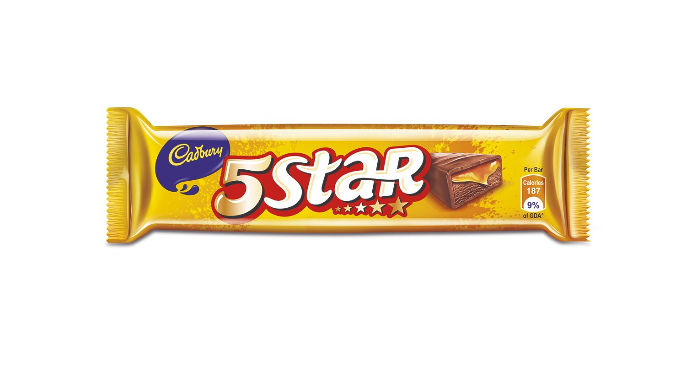
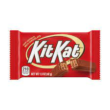

5 Star is a chocolate bar produced by Cadbury's and sold in India, Indonesia, Malaysia, Brazil, South Africa, the Philippines and Egypt.

Kit Kat is a chocolate bar made from wafers created by Rowntree's of York, United Kingdom, and is now is made globally by Nestlé. The standard bars consist .

Spoilage and fermented milk products — Milk is a nutrient-rich liquid food produced by the mammary glands of mammals. It is the primary source of nutrition.